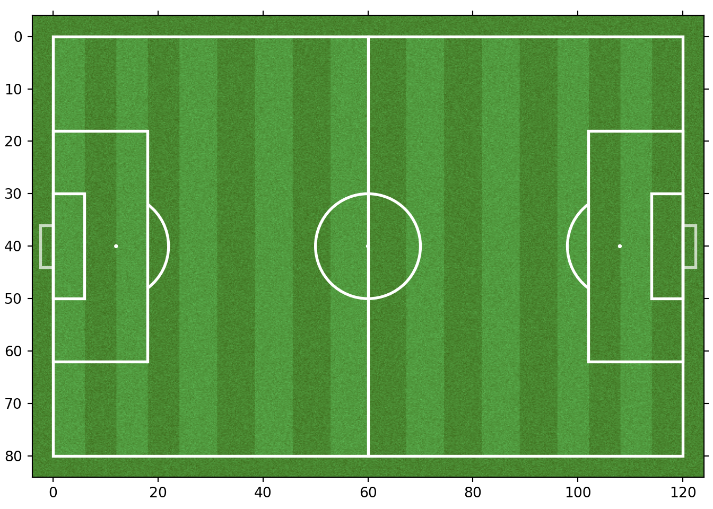
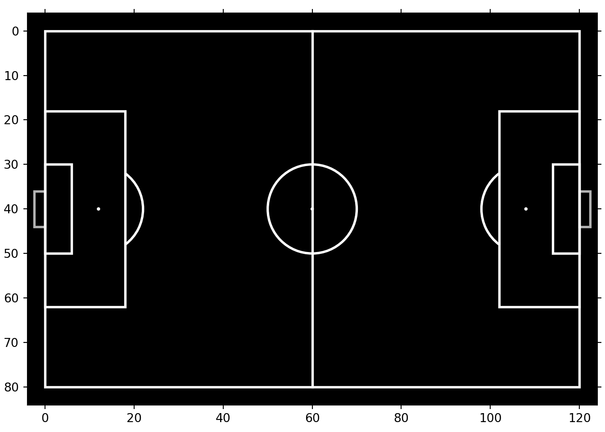
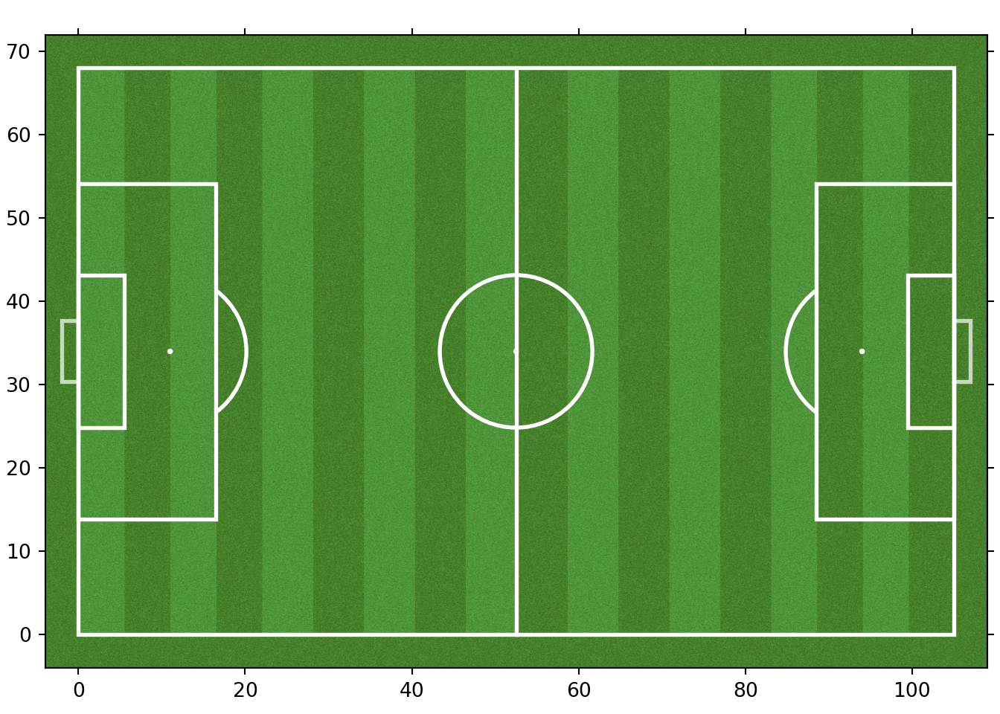

If you do not want to recreate a football pitch manually using Python (which would be rather tedious) you can simply use the mplsoccer module without any concern. To my knowledge it provides with the best functionalities to draw a football pitch. This package is maintained by Anmol Durgapal and Andrew Rowlinson.
Keep in mind you can do a lot more advanced visualization stuffs using mplsoccer besides drawing a football pitch. We will encounter them as we move forward with other posts later. For now let us focus on visualizing a pitch in the simplest way possible. We need to pip install the package first
Note that mplsoccer uses Python 3.6+. Next we need to import matplotlib and the Pitch classes.
Let us try to draw the simplest football pitch that satisfies our visualization needs.
pitch = Pitch(pitch_color='grass', line_color='white', stripe=True, constrained_layout=True,
tight_layout= False, goal_type = 'box', label = True, axis = True, tick=True)
fig, ax = pitch.draw()
plt.show()
Let us try to understand what is happening here. Personally, I like setting the pitch_color argument to 'grass' giving an impression of a real life football pitch. Note that any other color can be set, for example, 'black' or any color represented by its hex code. Discarding the stripe argument removes the darker stripes that appear on the pitch. The line_color is self-explanatory and the user can change its color too according to their need. By default, the axis, labels and the ticks representing the scales are switched off, The user can turn it on by setting label, axis and tick arguments to be True, as evident in the above pitch. Let us draw a different pitch with its color changed and stripes removed.
pitch = Pitch(pitch_color='black', line_color='white', constrained_layout=True,
tight_layout= False, goal_type = 'box', label = True, axis = True, tick=True)
fig, ax = pitch.draw()
plt.show()
Isn’t mplsoccer awesome? Now let us focus on the axis range for a moment. By default the Pitch() function sets the pitch type to be statsbomb where the y-axis is inverted and ranges from 80 to 0. The x-axis ranges from 0 to 120. We will be mostly working with statsbomb data, so, these orientations of the axes won’t be of much concern. Nevertheless this information is way too useful and we must keep this in mind, in case we deal with football data from other sources.
To be precise, there are eight different pitch types that mplsoccer provides us with. They are 'statsbomb', 'opta', 'tracab', 'skillcorner', 'wyscout','metricasports', 'uefa', and 'custom'. This can be set using the pitch_type argument inside the Pitch() function. Let us check the orientation of the uefa pitch type:
pitch = Pitch(pitch_color='black', pitch_type = 'uefa', line_color = 'white', constrained_layout = True,
tight_layout = False, goal_type = 'box', label = True, axis = True, tick=True)
fig, ax = pitch.draw()
plt.show()